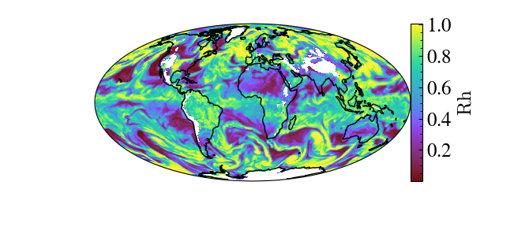

Introducing yt_xarray#
yt_xarray is a package built to facilitate data transfer between xarray and yt. Its primary implementation is through an xarray accessor object, accessible off of any
xarray dataset object. Given an xarray dataset, ds, the primary method ds.yt.load_grid
will load a field or subset of fields from the xarray dataset within a wrapping yt dataset:
import yt_xarray
# load a standard xarray dataset
ds = yt_xarray.open_dataset("path/to/your/dataset.nc") # or xarray.open_dataset
# initialize a yt dataset wrapper
yt_ds = ds.yt.load_grid(fields=(['list','of','fields']))
The yt dataset, yt_ds, is a full-fledged yt dataset that can be used with yt but containing references to the original xarray dataset. This means that data required by yt is read in from the original xarray dataset on demand, without copying data by default.
Recent Improvements#
A number of recent updates to both yt_xarray and yt have simplified using yt with xarray datasets.
First, a number of functions from the yt API have been exposed from within the yt_xarray .yt
accessor object, including: SlicePlot, ProjectionPlot, PhasePlot and ProfilePlot, allowing the user to skip the intermediate step of creating a yt dataset object.
The following example creates a slice plot of a MERRA-2 reanalysis file (Global Modeling and Assimilation Office, 2015):
import yt_xarray
import cartopy.feature as cfeature
import numpy as np
dsx = yt_xarray.open_dataset("sample_nc/MERRA2_100.inst3_3d_asm_Np.19800120.nc4")
dsx0 = dsx.isel({'time':0})
slc = dsx0.yt.SlicePlot('altitude', 'RH', center=(800, 0.,0.))
slc.set_log('RH', False)
slc.render()
slc.plots['RH'].axes.add_feature(cfeature.COASTLINE)
slc.show()

The following code creates a yt.PhasePlot, a 2D binned statistic plot by binning the temperature (T) and relative humidity (RH) variables across the whole dataset. The 3rd variable is the binned field (in this case an array of ones) and values are summed within bins (by setting weight_field=None) and normalized by their totals (fractional=True), resulting in a global 2D probability distribution of T vs RH.
# add a field fo
ones_da = xr.DataArray(np.ones(dsx0.RH.shape), dims=dsx0.RH.dims)
dsx0['ones_field'] = ones_da
pp = dsx0.yt.PhasePlot('RH', 'T', 'ones_field', weight_field=None, fractional=True, figure_size=(3,3))
pp.set_colorbar_label('ones_field','PDF')
pp.set_font_size(12)
pp.show()
pp.save('slice_images/merra2_phase_plot.png')

Within yt, there have also been improvements to plot annotations for geopgraphic data (released in yt v4.4.0) and in-progress arbitrary cutting planes which will allow cross-section construction (yt PR#4847)